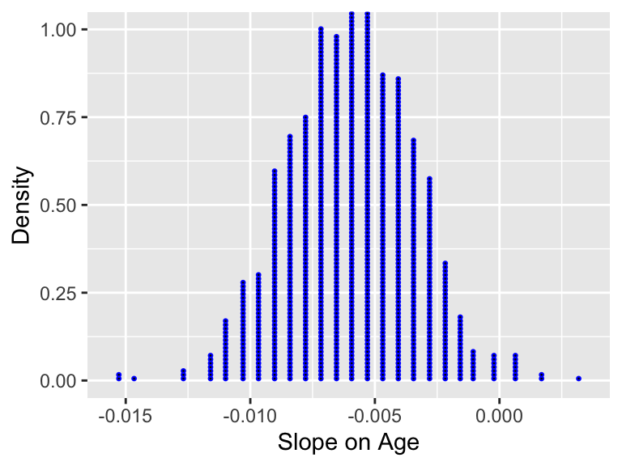

| Professor ID | Number of Times Sampled |
|---|---|
| 34 | 13 |
| 49 | 13 |
| 82 | 11 |
| 10 | 10 |
| 20 | 10 |
| 58 | 10 |
| 71 | 10 |
| 19 | 9 |
| 70 | 9 |
| 4 | 8 |
Exploring Sampling Concepts
Random Sampling
- What is the central tenant of random sampling? i.e. How are observations selected from the study population?
- Comment on the “random-ness” (not representative-ness) of the following study:
A Cal Poly administrator wants to know the average income of all graduates in the last 10 years. So they get the records of fifty randomly chosen graduates, contact them, and obtain their answers.
Sampling Randomly
Suppose we have a database of every professor at UT Austin, and are interested in studying the relationship between a professor’s teaching evaluations and their age.
- How would we go about randomly sampling observations from the database?
- Would we expect that our sample look like the population of professors at UT Austin?
Representative Sampling
- What is the central tenant of representative sampling? i.e. How are observations selected from the study population?
- Comment on the “representative-ness” of the following studies:
The Royal Air Force wants to study how resistant all their airplanes are to bullets. They study the bullet holes on all the airplanes on the tarmac after an air battle against the Luftwaffe (German Air Force).
You want to know the average number of people living in houses in the 1-mile radius surrounding Cal Poly. You randomly pick 25 houses and record data by knocking on the door of each house.
Sampling Representatively
Suppose we want to ensure that we have a representative proportion of faculty who are women and faculty of different ranks (e.g., teaching, tenure track, tenured). The table below summarizes the demographics of women and men faculty of different ranks:
- Women teaching = 58%
- Women tenure track = 30%
- Women tenured = 12%
- Men teaching = 20%
- Men tenure track = 42%
- Men tenured = 38%
- Suppose we can reasonably collect data on 200 individuals. How could we go about collecting a representative sample that accounts for these demographic characteristics?
Sampling Issues
In the evals data, the courses included in the dataset were only taught by 94 unique professors. If we were interested in making inferences about the relationship between eval scores and age for professors at UT Austin, a simpler approach would be to have one observation per professor!
- How could you use sampling to remedy this situation?
Population Parameter
To investigate the relationship between course evaluation score and the professor’s age, we would carry out a simple linear regression.
- What would be the population parameter we are interested in? Do we know its value?
- What would be our point estimate?
Repeated Samples
Repeated samples are necessary for us to create a sampling distribution—a distribution of statistics from lots of different samples—like the one below.
- What are we assuming about how the samples were collected when we plot every statistic on the same distribution?
